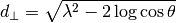

Bin2DPowderDiffraction dialog.
Table of Contents
| Name | Direction | Type | Default | Description |
|---|---|---|---|---|
| InputWorkspace | Input | EventWorkspace | Mandatory | An input EventWorkspace must be a Histogram workspace, not Point data. X-axis units must be wavelength. |
| OutputWorkspace | Output | Workspace | Mandatory | An output workspace. |
| dSpaceBinning | Input | dbl list | A comma separated list of first bin boundary, width, last bin boundary. Optionally this can be followed by a comma and more widths and last boundary pairs. Negative width values indicate logarithmic binning. | |
| dPerpendicularBinning | Input | dbl list | A comma separated list of first bin boundary, width, last bin boundary. Optionally this can be followed by a comma and more widths and last boundary pairs. Negative width values indicate logarithmic binning. | |
| BinEdgesFile | Input | string | Optional: The ascii file containing the list of bin edges. Either this or Axis1- and dPerpendicularBinning need to be specified. Allowed extensions: [‘.txt’, ‘.dat’] | |
| NormalizeByBinArea | Input | boolean | True | Normalize the binned workspace by the bin area. |
This algorithm performs binning of the given workspace in  space, where
space, where  is the d-Spacing and
is the d-Spacing and
(1)
The result is that a Matrix workspace is created. If  or
or  , the algorithm will terminate with an
error message, since no reasonable or
, the algorithm will terminate with an
error message, since no reasonable or  value can be calculated. In this case it is recommended to check
whether detector positions are correct and to mask the problem detectors.
value can be calculated. In this case it is recommended to check
whether detector positions are correct and to mask the problem detectors.
Warning
The information about correspondence of spectra to detectors is lost in the produced OutputWorkspace.
Applying any algorithms like ConvertUnits v1, which require information about  ,
to this workspace may lead to incorrect results.
,
to this workspace may lead to incorrect results.
Either dSpaceBinning and dPerpendicularBinning or BinEdgesFile must be specified, but not both. dSpaceBinning contains binning parameters in d-Spacing. dPerpendicularBinning contains binning parameters in d-SpacingPerpendicular. Binning parameters should be set the same way as for Rebin v1 algorithm.
In the case if non-equidistant binning is required, bin edges can be specified in the BinEdgesFile.
BinEdgesFile is an ascii-file, where the bin edges are specified in a following format.
The first 2 lines contain header:
#dp_min #dp_max
#d_bins
Then follows the line dp = 
 where the bin edges for the n-th bin are specified,
starting from the lowest values. In the next line bin edges for d-Spacing are listed as
where the bin edges for the n-th bin are specified,
starting from the lowest values. In the next line bin edges for d-Spacing are listed as  . Then this
can be repeated as many times as necessary. For example:
. Then this
can be repeated as many times as necessary. For example:
#dp_min #dp_max
#d_bins
dp = 3.0 4.0
1.0 3.0 6.0
dp = 4.0 4.5
2.0 4.0 5.15 6.0
In this example the following bin edges are specified for the -axis: 3.0, 4.0, 4.5. The d-axis for the first spectrum
( from 3.0 to 4.0) will contain the bin edges 1.0, 3.0, 6.0 and for the second spectrum ( from 4.0 to 4.5)
the bin edges 2.0, 4.0, 5.15, 6.0.
Example - Bin2DPowderDiffraction
# Create an input workspace
wsIn = CreateSampleWorkspace(WorkspaceType="Event", Function="Powder Diffraction",
NumBanks=1, XUnit="Wavelength", NumEvents=10,
XMin=1.0, XMax=6.0, BinWidth=1.0)
# Move detector to get reasonable 2theta
MoveInstrumentComponent(wsIn, 'bank1', X=1,Y=0,Z=1, RelativePosition=False)
# Do binning
wsOut = Bin2DPowderDiffraction(wsIn, dSpaceBinning="2,2,6", dPerpendicularBinning="1,2,5", NormalizeByBinArea=False)
# Do binning and normalize the result by bin area
wsOutNorm = Bin2DPowderDiffraction(wsIn, dSpaceBinning="2,2,6", dPerpendicularBinning="1,2,5", NormalizeByBinArea=True)
# Print the result
print "Y values without normalization:"
print wsOut.extractY()
print "Y values with normalization by bin area:"
print wsOutNorm.extractY()
Output:
Y values without normalization:
[[ 278. 0.]
[ 14. 145.]]
Y values with normalization by bin area:
[[ 69.5 0. ]
[ 3.5 36.25]]
More details on the multidimensional TOF powder diffraction data reduction can be found in the following papers.
Categories: Algorithms | Diffraction\Focussing